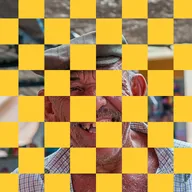

Scacchiera

Disegna una scacchiera sulle parti opache del livello oppure ne ritaglia le caselle.
Impostazioni
| Impostazione | Tipo | Intervallo | Predefinito |
|---|---|---|---|
| Spostamento | Punto (X, Y) | Da -5000 px a 5000 px | 0 px, 0 px |
| Numero | Numero | Da 0.5 a 200 | 10 |
| Allungamento | Punto (X, Y) | Da 0.01 a 10 | 1, 1 |
| Colore | Colore | – | #2D1EF6 |
| Ritaglia | Attivo o disattivo | – | Disattivo |
| Angolo | Angolo | Da -3600° a 3600° | 0° |
| Spazio schermo | Attivo o disattivo | – | Disattivo |